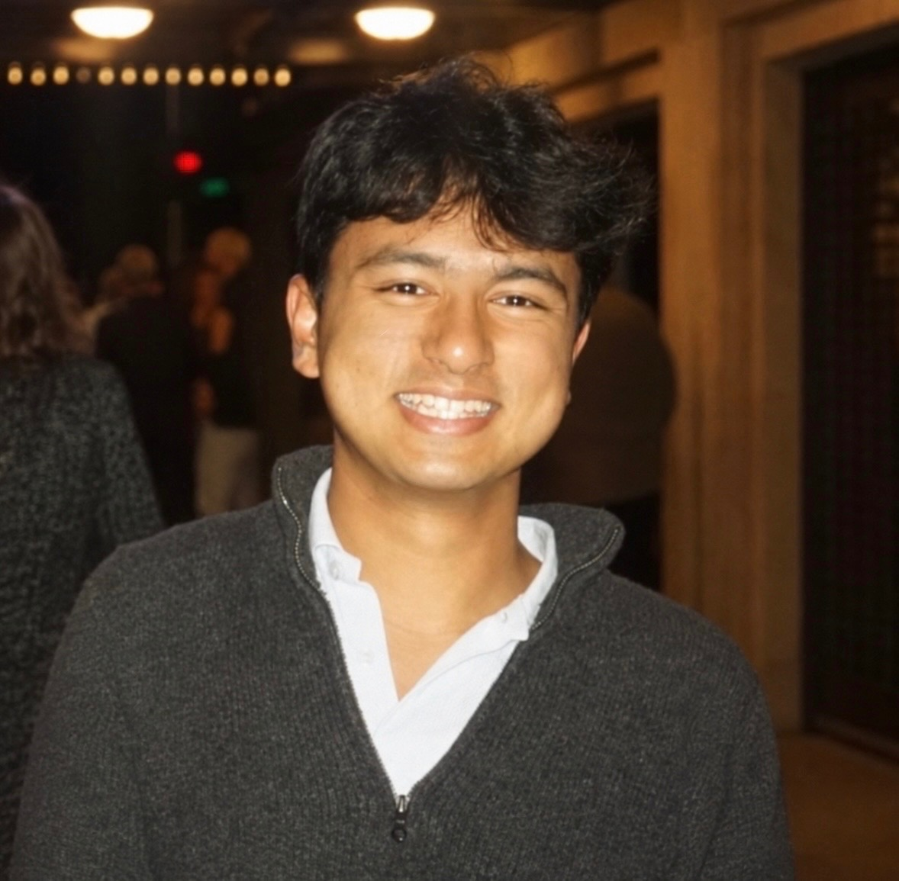

Welcome to Vivaan's Personal Website

Hi, I'm Vivaan Sinha, a college student based in the Bay Area with a passion for computer science and technology.
I'm heavily involved across STEM and humanities, and I've had the opportunity to work on research connected to BAIR, Lawrence Livermore Lab, and UT Austin.
I'm especially interested in ethical AI use in cybersecurity, exploring how to preserve data privacy while still leveraging AI to keep pace with a rapidly evolving threat landscape.
I'm currently enrolled at Cal Poly SLO, studying Computer Science with a planned concentration in privacy and security.
This site is where I'll be sharing my portfolio, resume, and blog as I continue to grow in this field.